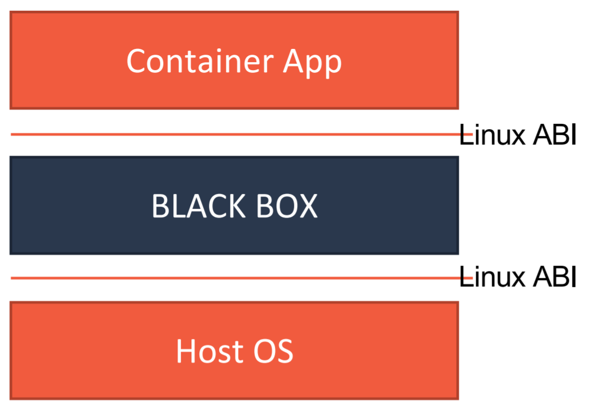
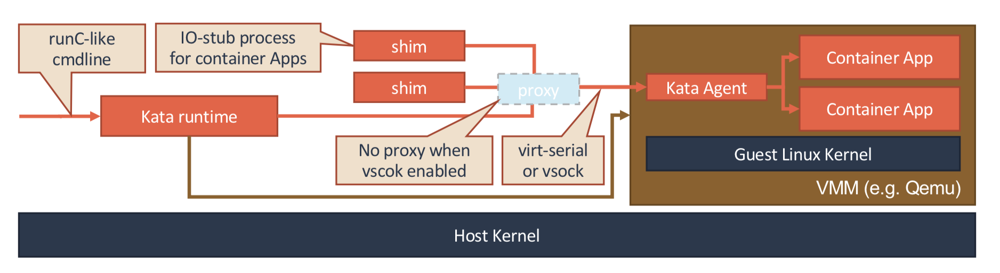
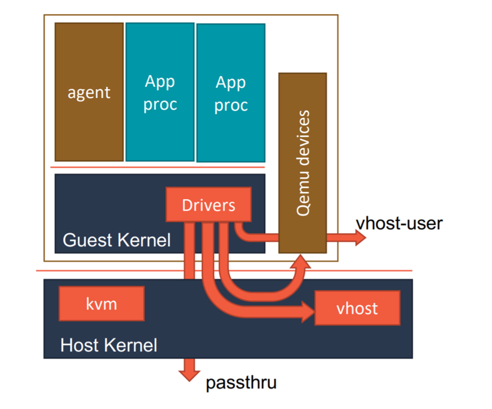
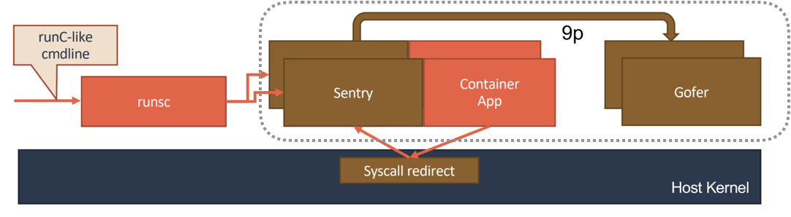
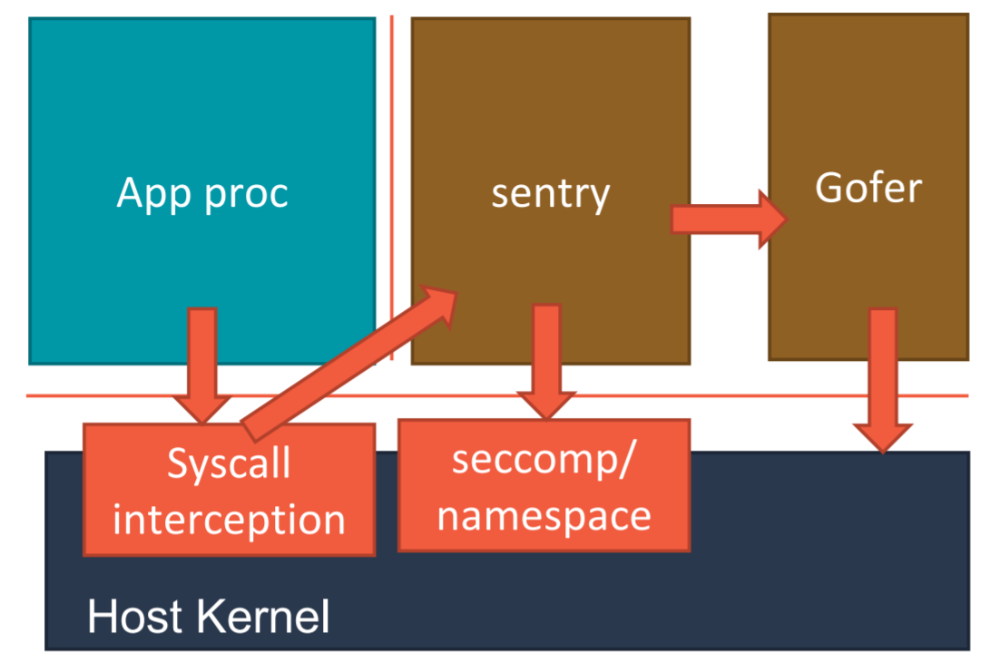
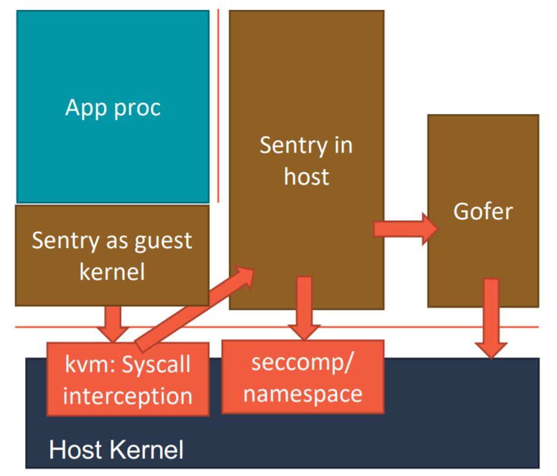

- 00 开篇词 打通“容器技术”的任督二脉.md.html
- 01 预习篇 · 小鲸鱼大事记（一）：初出茅庐.md.html
- 02 预习篇 · 小鲸鱼大事记（二）：崭露头角.md.html
- 03 预习篇 · 小鲸鱼大事记（三）：群雄并起.md.html
- 04 预习篇 · 小鲸鱼大事记（四）：尘埃落定.md.html
- 05 白话容器基础（一）：从进程说开去.md.html
- 06 白话容器基础（二）：隔离与限制.md.html
- 07 白话容器基础（三）：深入理解容器镜像.md.html
- 08 白话容器基础（四）：重新认识Docker容器.md.html
- 09 从容器到容器云：谈谈Kubernetes的本质.md.html
- 10 Kubernetes一键部署利器：kubeadm.md.html
- 11 从0到1：搭建一个完整的Kubernetes集群.md.html
- 12 牛刀小试：我的第一个容器化应用.md.html
- 13 为什么我们需要Pod？.md.html
- 14 深入解析Pod对象（一）：基本概念.md.html
- 15 深入解析Pod对象（二）：使用进阶.md.html
- 16 编排其实很简单：谈谈“控制器”模型.md.html
- 17 经典PaaS的记忆：作业副本与水平扩展.md.html
- 18 深入理解StatefulSet（一）：拓扑状态.md.html
- 19 深入理解StatefulSet（二）：存储状态.md.html
- 20 深入理解StatefulSet（三）：有状态应用实践.md.html
- 21 容器化守护进程的意义：DaemonSet.md.html
- 22 撬动离线业务：Job与CronJob.md.html
- 23 声明式API与Kubernetes编程范式.md.html
- 24 深入解析声明式API（一）：API对象的奥秘.md.html
- 25 深入解析声明式API（二）：编写自定义控制器.md.html
- 26 基于角色的权限控制：RBAC.md.html
- 27 聪明的微创新：Operator工作原理解读.md.html
- 28 PV、PVC、StorageClass，这些到底在说啥？.md.html
- 29 PV、PVC体系是不是多此一举？从本地持久化卷谈起.md.html
- 30 编写自己的存储插件：FlexVolume与CSI.md.html
- 31 容器存储实践：CSI插件编写指南.md.html
- 32 浅谈容器网络.md.html
- 33 深入解析容器跨主机网络.md.html
- 34 Kubernetes网络模型与CNI网络插件.md.html
- 35 解读Kubernetes三层网络方案.md.html
- 36 为什么说Kubernetes只有soft multi-tenancy？.md.html
- 37 找到容器不容易：Service、DNS与服务发现.md.html
- 38 从外界连通Service与Service调试“三板斧”.md.html
- 39 谈谈Service与Ingress.md.html
- 40 Kubernetes的资源模型与资源管理.md.html
- 41 十字路口上的Kubernetes默认调度器.md.html
- 42 Kubernetes默认调度器调度策略解析.md.html
- 43 Kubernetes默认调度器的优先级与抢占机制.md.html
- 44 Kubernetes GPU管理与Device Plugin机制.md.html
- 45 幕后英雄：SIG-Node与CRI.md.html
- 46 解读 CRI 与 容器运行时.md.html
- 47 绝不仅仅是安全：Kata Containers 与 gVisor.md.html
- 48 Prometheus、Metrics Server与Kubernetes监控体系.md.html
- 49 Custom Metrics_ 让Auto Scaling不再“食之无味”.md.html
- 50 让日志无处可逃：容器日志收集与管理.md.html
- 51 谈谈Kubernetes开源社区和未来走向.md.html
- 52 答疑：在问题中解决问题，在思考中产生思考.md.html
- 特别放送 2019 年，容器技术生态会发生些什么？.md.html
- 特别放送 基于 Kubernetes 的云原生应用管理，到底应该怎么做？.md.html
- 结束语 Kubernetes：赢开发者赢天下.md.html
- 捐赠
47 绝不仅仅是安全：Kata Containers 与 gVisor
你好，我是张磊。今天我和你分享的主题是：绝不仅仅是安全之Kata Containers 与 gVisor。
在上一篇文章中，我为你详细地讲解了 kubelet 和 CRI 的设计和具体的工作原理。而在讲解 CRI 的诞生背景时，我也提到过，这其中的一个重要推动力，就是基于虚拟化或者独立内核的安全容器项目的逐渐成熟。
使用虚拟化技术来做一个像 Docker 一样的容器项目，并不是一个新鲜的主意。早在 Docker 项目发布之后，Google 公司就开源了一个实验性的项目，叫作 novm。这，可以算是试图使用常规的虚拟化技术来运行 Docker 镜像的第一次尝试。不过，novm 在开源后不久，就被放弃了，这对于 Google 公司来说或许不算是什么新鲜事，但是 novm 的昙花一现，还是激发出了很多内核开发者的灵感。
所以在2015年，几乎在同一个星期，Intel OTC （Open Source Technology Center） 和国内的 HyperHQ 团队同时开源了两个基于虚拟化技术的容器实现，分别叫做 Intel Clear Container 和 runV 项目。
而在2017年，借着 Kubernetes 的东风，这两个相似的容器运行时项目在中立基金会的撮合下最终合并，就成了现在大家耳熟能详的 Kata Containers 项目。 由于 Kata Containers 的本质就是一个精简后的轻量级虚拟机，所以它的特点，就是“像虚拟机一样安全，像容器一样敏捷”。
而在2018年，Google 公司则发布了一个名叫 gVisor 的项目。gVisor 项目给容器进程配置一个用 Go 语言实现的、运行在用户态的、极小的“独立内核”。这个内核对容器进程暴露 Linux 内核 ABI，扮演着“Guest Kernel”的角色，从而达到了将容器和宿主机隔离开的目的。
不难看到，无论是 Kata Containers，还是 gVisor，它们实现安全容器的方法其实是殊途同归的。这两种容器实现的本质，都是给进程分配了一个独立的操作系统内核，从而避免了让容器共享宿主机的内核。这样，容器进程能够看到的攻击面，就从整个宿主机内核变成了一个极小的、独立的、以容器为单位的内核，从而有效解决了容器进程发生“逃逸”或者夺取整个宿主机的控制权的问题。这个原理，可以用如下所示的示意图来表示清楚。

而它们的区别在于，Kata Containers 使用的是传统的虚拟化技术，通过虚拟硬件模拟出了一台“小虚拟机”，然后在这个小虚拟机里安装了一个裁剪后的 Linux 内核来实现强隔离。
而 gVisor 的做法则更加激进，Google 的工程师直接用 Go 语言“模拟”出了一个运行在用户态的操作系统内核，然后通过这个模拟的内核来代替容器进程向宿主机发起有限的、可控的系统调用。
接下来，我就来为你详细解读一下 KataContainers 和 gVisor 具体的设计原理。
首先，我们来看 KataContainers。它的工作原理可以用如下所示的示意图来描述。

我们前面说过，Kata Containers 的本质，就是一个轻量化虚拟机。所以当你启动一个 Kata Containers 之后，你其实就会看到一个正常的虚拟机在运行。这也就意味着，一个标准的虚拟机管理程序（Virtual Machine Manager, VMM）是运行 Kata Containers 必备的一个组件。在我们上面图中，使用的 VMM 就是 Qemu。
而使用了虚拟机作为进程的隔离环境之后，Kata Containers 原生就带有了 Pod 的概念。即：这个Kata Containers 启动的虚拟机，就是一个 Pod；而用户定义的容器，就是运行在这个轻量级虚拟机里的进程。在具体实现上，Kata Containers 的虚拟机里会有一个特殊的 Init 进程负责管理虚拟机里面的用户容器，并且只为这些容器开启 Mount Namespace。所以，这些用户容器之间，原生就是共享 Network 以及其他Namespace 的。
此外，为了跟上层编排框架比如 Kubernetes 进行对接，Kata Containers 项目会启动一系列跟用户容器对应的 shim 进程，来负责操作这些用户容器的生命周期。当然，这些操作，实际上还是要靠虚拟机里的 Init 进程来帮你做到。
而在具体的架构上，Kata Containers的实现方式同一个正常的虚拟机其实也非常类似。这里的原理，可以用如下所示的一幅示意图来表示。

可以看到，当 Kata Containers 运行起来之后，虚拟机里的用户进程（容器），实际上只能看到虚拟机里的、被裁减过的 Guest Kernel，以及通过 Hypervisor 虚拟出来的硬件设备。
而为了能够对这个虚拟机的 I/O 性能进行优化，Kata Containers 也会通过 vhost 技术（比如：vhost-user）来实现 Guest 与 Host 之间的高效的网络通信，并且使用 PCI Passthrough （PCI 穿透）技术来让 Guest 里的进程直接访问到宿主机上的物理设备。这些架构设计与实现，其实跟常规虚拟机的优化手段是基本一致的。
相比之下，gVisor 的设计其实要更加“激进”一些。它的原理，可以用如下所示的示意图来表示清楚。

gVisor工作的核心，在于它为应用进程、也就是用户容器，启动了一个名叫 Sentry 的进程。 而Sentry 进程的主要职责，就是提供一个传统的操作系统内核的能力，即：运行用户程序，执行系统调用。所以说，Sentry 并不是使用 Go 语言重新实现了一个完整的 Linux 内核，而只是一个对应用进程“冒充”内核的系统组件。
在这种设计思想下，我们就不难理解，Sentry 其实需要自己实现一个完整的 Linux 内核网络栈，以便处理应用进程的通信请求。然后，把封装好的二层帧直接发送给 Kubernetes 设置的 Pod 的Network Namespace 即可。
此外，Sentry 对于Volume 的操作，则需要通过 9p 协议交给一个叫做 Gofer 的代理进程来完成。Gofer 会代替应用进程直接操作宿主机上的文件，并依靠seccomp机制将自己的能力限制在最小集，从而防止恶意应用进程通过 Gofer 来从容器中“逃逸”出去。
而在具体的实现上，gVisor 的 Sentry 进程，其实还分为两种不同的实现方式。这里的工作原理，可以用下面的示意图来描述清楚。

第一种实现方式，是使用Ptrace机制来拦截用户应用的系统调用（System Call），然后把这些系统调用交给 Sentry 来进行处理。
这个过程，对于应用进程来说，是完全透明的。而 Sentry 接下来，则会扮演操作系统的角色，在用户态执行用户程序，然后仅在需要的时候，才向宿主机发起 Sentry 自己所需要执行的系统调用。这，就是 gVisor 对用户应用进程进行强隔离的主要手段。不过， Ptrace 进行系统调用拦截的性能实在是太差，仅能供 Demo 时使用。
而第二种实现方式，则更加具有普适性。它的工作原理如下图所示。

在这种实现里，Sentry 会使用 KVM 来进行系统调用的拦截，这个性能比 Ptrace 就要好很多了。
当然，为了能够做到这一点，Sentry 进程就必须扮演一个 Guest Kernel 的角色，负责执行用户程序，发起系统调用。而这些系统调用被 KVM 拦截下来，还是继续交给 Sentry 进行处理。只不过在这时候，Sentry 就切换成了一个普通的宿主机进程的角色，来向宿主机发起它所需要的系统调用。
可以看到，在这种实现里，Sentry 并不会真的像虚拟机那样去虚拟出硬件设备、安装 Guest 操作系统。它只是借助 KVM 进行系统调用的拦截，以及处理地址空间切换等细节。
值得一提的是，在 Google 内部，他们也是使用的第二种基于 Hypervisor 的gVisor 实现。只不过 Google 内部有自己研发的 Hypervisor，所以要比 KVM 实现的性能还要好。
通过以上的讲述，相信你对 Kata Containers 和 gVisor 的实现原理，已经有一个感性的认识了。需要指出的是，到目前为止，gVisor 的实现依然不是非常完善，有很多 Linux系统调用它还不支持；有很多应用，在 gVisor 里还没办法运行起来。 此外，gVisor也暂时没有实现一个 Pod 多个容器的支持。当然，在后面的发展中，这些工程问题一定会逐渐解决掉的。
另外，你可能还听说过 AWS 在2018年末发布的一个叫做 Firecracker 的安全容器项目。这个项目的核心，其实是一个用 Rust 语言重新编写的 VMM（即：虚拟机管理器）。这就意味着， Firecracker 和 Kata Containers 的本质原理，其实是一样的。只不过， Kata Containers 默认使用的 VMM 是 Qemu，而 Firecracker，则使用自己编写的 VMM。所以，理论上，Kata Containers 也可以使用 Firecracker 运行起来。
总结
在本篇文章中，我为你详细地介绍了拥有独立内核的安全容器项目，对比了 KataContainers 和 gVisor 的设计与实现细节。
在性能上，KataContainers 和 KVM 实现的 gVisor 基本不分伯仲，在启动速度和占用资源上，基于用户态内核的 gVisor 还略胜一筹。但是，对于系统调用密集的应用，比如重 I/O 或者重网络的应用，gVisor 就会因为需要频繁拦截系统调用而出现性能急剧下降的情况。此外，gVisor 由于要自己使用 Sentry 去模拟一个Linux 内核，所以它能支持的系统调用是有限的，只是 Linux 系统调用的一个子集。
不过，gVisor 虽然现在没有任何优势，但是这种通过在用户态运行一个操作系统内核，来为应用进程提供强隔离的思路，的确是未来安全容器进一步演化的一个非常有前途的方向。
值得一提的是，Kata Containers 团队在 gVisor 之前，就已经 Demo 了一个名叫 Linuxd 的项目。这个项目，使用了 User Mode Linux (UML)技术，在用户态运行起了一个真正的 Linux Kernel 来为应用进程提供强隔离，从而避免了重新实现 Linux Kernel 带来的各种麻烦。
有兴趣的话，你可以在这里查看这个演讲。我相信，这个方向，应该才是安全容器进化的未来。这比 Unikernels 这种根本不适合实际场景中使用的思路，要靠谱得多。
本篇图片出处均引自 Kata Containers 的官方对比资料。
思考题
安全容器的意义，绝不仅仅止于安全。你可以想象一下这样一个场景：比如，你的宿主机的 Linux 内核版本是3.6，但是应用却必须要求 Linux 内核版本是4.0。这时候，你就可以把这个应用运行在一个 KataContainers 里。那么请问，你觉得使用 gVisor 是否也能提供这种能力呢？原因是什么呢？
感谢你的收听，欢迎你给我留言，也欢迎分享给更多的朋友一起阅读。
© 2019 - 2023 Liangliang Lee. Powered by gin and hexo-theme-book.